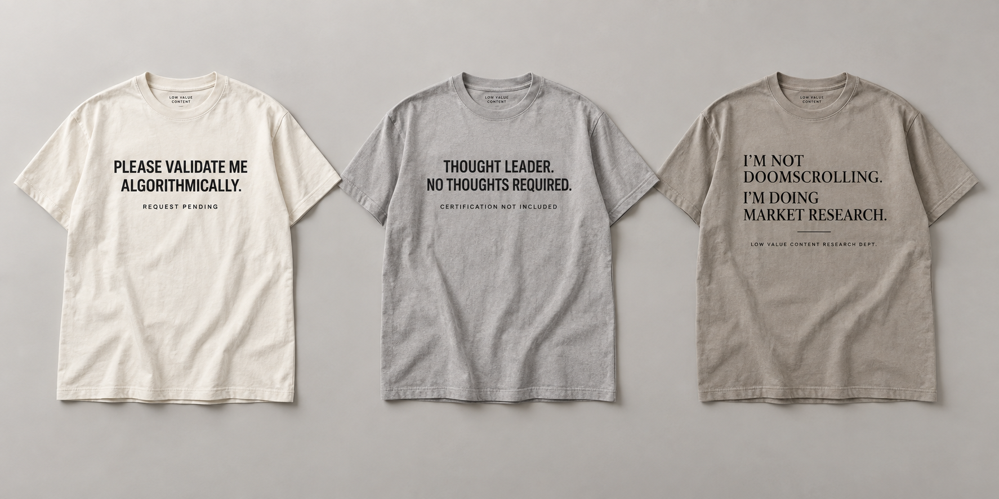
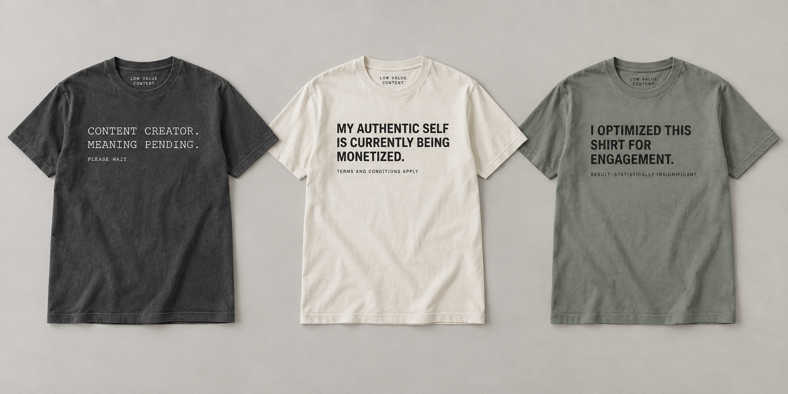

Editorial apparel for the extremely online
The internet has produced enough content.
Unfortunately, we made shirts about it.

Drop 001
Six shirts. One shared condition.
Wear what the feed did to you.
See all six →


Low Value Content presents
You are not the product.
You are also the content.
We make dry, wearable observations about algorithm anxiety, workplace performance, creator economics, and the daily requirement to appear naturally interesting.

The ongoing series
Ten symptoms.
New observations as required.
The first release is only the beginning. Each collection takes aim at a different ritual of contemporary digital life.
The shirt matters
The joke should be disposable.
The garment should not.
Substantial. A premium, relaxed heavyweight direction designed to feel like apparel—not event swag.
Restrained. Neutral colors, edited typography, and one-color prints that do not need to shout.
Physically proven. Final products will not launch until the fit, print, wash, and delivery experience survive real-world testing.

The feed will continue
Drop 001 is currently buffering.
Follow the release for first looks, sample decisions, and the eventual opportunity to spend money on a sentence.
Follow the release